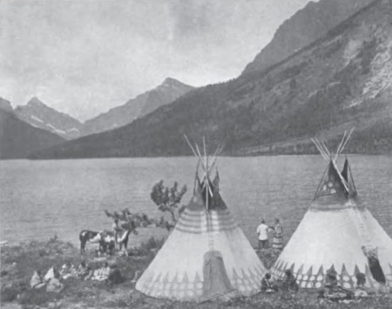
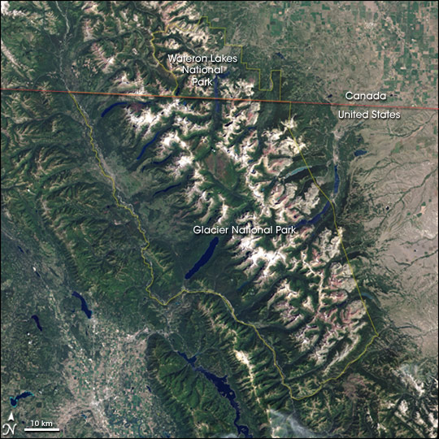
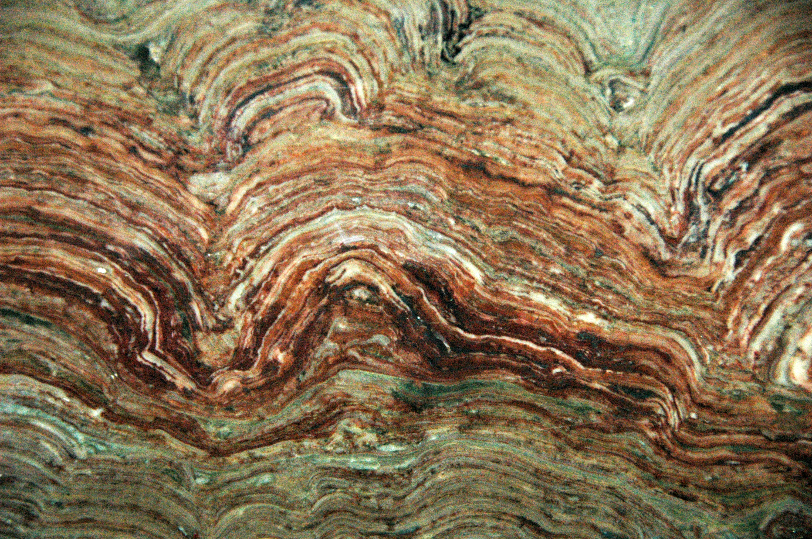
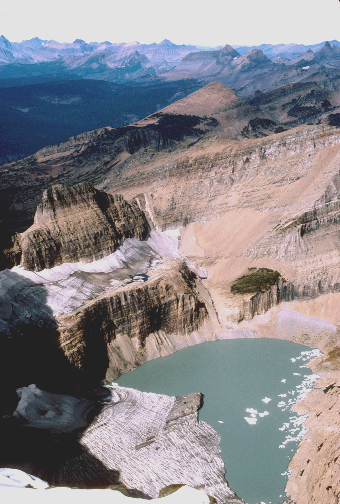
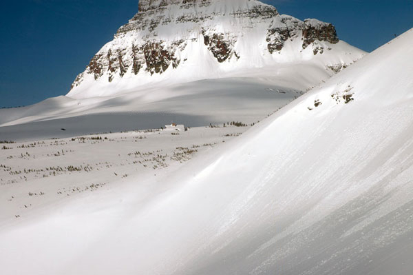
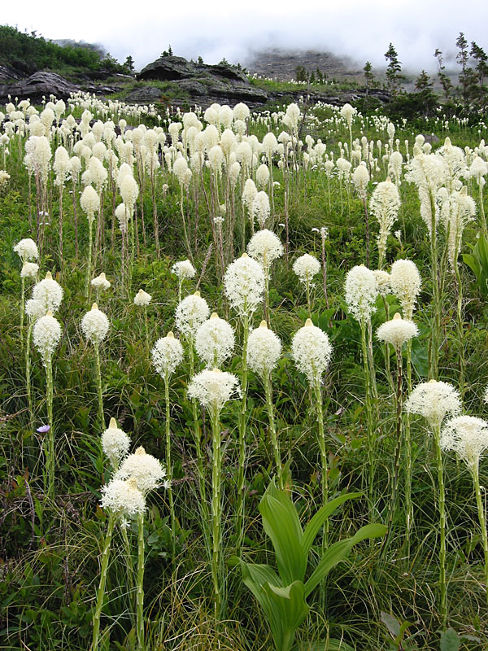
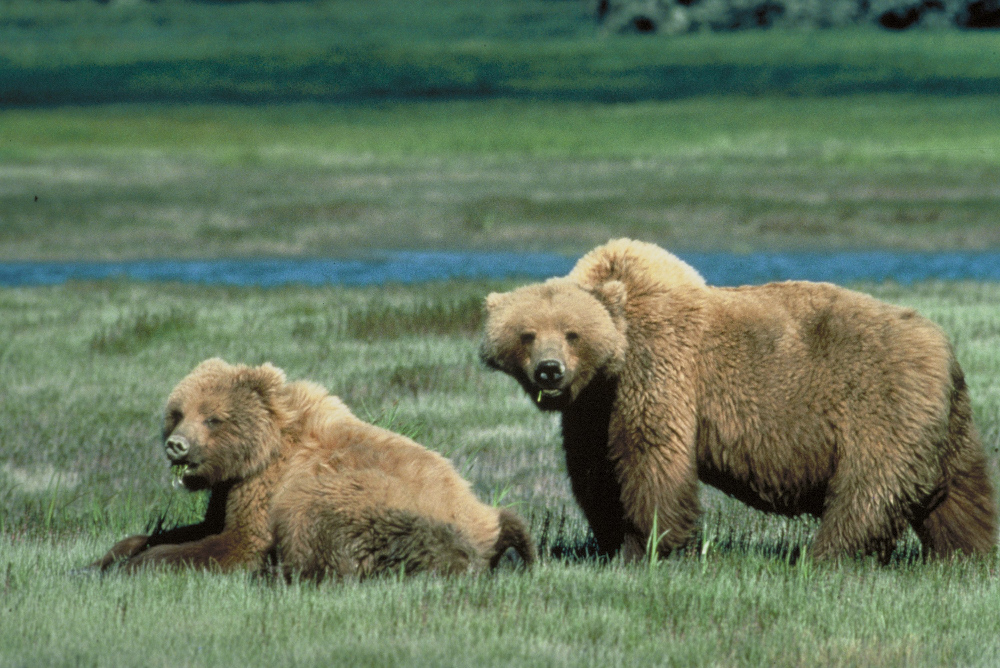
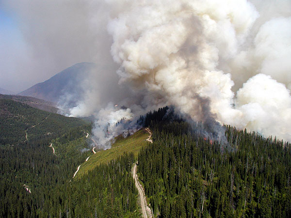

Glacier National Park
All sourced from Wikipedia
Glacier National Park is an American Montana, on the , Canada–United States border adjacent to the Canadian provinces of Alberta and British Columbia. The park encompasses more than 1 million acres (4,000 km2) and includes parts of two mountain ranges (sub-ranges of the Rocky Mountains), more than 130 named lakes, more than 1,000 different species of plants, and hundreds of species of animals. This vast pristine ecosystem is the centerpiece of what has been referred to as the "Crown of the Continent Ecosystem," a region of protected land encompassing 16,000 square miles (41,000 km2).

Contents
History
According to archeological evidence, Native Americans first arrived in the Glacier area some 10,000 years ago. The earliest occupants with lineage to current tribes were the Flathead (Salish) and Kootenai, Shoshone, and Cheyenne. The Blackfeet lived on the eastern slopes of what later became the park, as well as the Great Plains immediately to the east. The park region provided the Blackfeet shelter from the harsh winter winds of the plains, allowing them to supplement their traditional bison hunts with other game meat. Today, the Blackfeet Indian Reservation borders the park in the east, while the Flathead Indian Reservation is located west and south of the park. When the Blackfeet Reservation was first established in 1855 by the Lame Bull Treaty, it included the eastern area of the current park up to the Continental Divide. To the Blackfeet, the mountains of this area, especially Chief Mountain and the region in the southeast at Two Medicine, were considered the "Backbone of the World" and were frequented during vision quests. In 1895 Chief White Calf of the Blackfeet authorized the sale of the mountain area, some 800,000 acres (3,200 km2), to the U.S. government for $1.5 million, with the understanding that they would maintain usage rights to the land for hunting as long as the ceded stripe will be public land of the United States. This established the current boundary between the park and the reservation.
Park Management
Glacier National Park is managed by the National Park Service, with the park's headquarters in West Glacier, Montana. Visitation to Glacier National Park averaged about 3.5 million visitors in 2019, which surpassed its 2017 peak of 3.31 million. Glacier has had at least 2 million annual visitors consistently since 2012, but has broken annual attendance records from 2014 to 2018. Anyone entering the United States over land or waterway from Canada must have a passport with them.
Geography and Geology
The park is bordered on the north by Waterton Lakes National Park in Alberta, and the Flathead Provincial Forest and Akamina-Kishinena Provincial Park in British Columbia. To the west, the north fork of the Flathead River forms the western boundary, while its middle fork is part of the southern boundary. The Blackfeet Indian Reservation provides most of the eastern boundary. The Lewis and Clark and the Flathead National Forests form the southern and western boundary. The remote Bob Marshall Wilderness Complex is located in the two forests immediately to the south.

Geology
The rocks found in the park are primarily sedimentary rocks of the Belt Supergroup. They were deposited in shallow seas over 1.6 billion to 800 million years ago. During the formation of the Rocky Mountains 170 million years ago, one region of rocks now known as the Lewis Overthrust was forced eastward 50 miles (80 km). This overthrust was several miles (kilometers) thick and hundreds of miles (kilometers) long. This resulted in older rocks being displaced over newer ones, so the overlying Proterozoic rocks are between 1.4 and 1.5 billion years older than Cretaceous age rocks they now rest on.
Glaciers
Glacier National Park is dominated by mountains which were carved into their present shapes by the huge glaciers of the last ice age. These glaciers have largely disappeared over the last 12,000 years. Evidence of widespread glacial action is found throughout the park in the form of U-shaped valleys, cirques, arêtes, and large outflow lakes radiating like fingers from the base of the highest peaks. Since the end of the ice ages, various warming and cooling trends have occurred. The last recent cooling trend was during the Little Ice Age, which took place approximately between 1550 and 1850. During the Little Ice Age, the glaciers in the park expanded and advanced, although to nowhere near as great an extent as they had during the Ice Age.
Climate
As the park spans the Continental Divide, and has more than 7,000 feet (2,100 m) in elevation variance, many climates and microclimates are found in the park. As with other alpine systems, average temperature usually drops as elevation increases. The western side of the park, in the Pacific watershed, has a milder and wetter climate, due to its lower elevation. Precipitation is greatest during the winter and spring, averaging 2 to 3 inches (50 to 80 mm) per month. Snowfall can occur at any time of the year, even in the summer, and especially at higher altitudes. The winter can bring prolonged cold waves, especially on the eastern side of the Continental Divide, which has a higher elevation overall. Snowfalls are significant over the course of the winter, with the largest accumulation occurring in the west. During the tourist season, daytime high temperatures average 60 to 70 °F (16 to 21 °C), and nighttime lows usually drop into the 40 °F (4 °C) range. Temperatures in the high country may be much cooler. In the lower western valleys, daytime highs in the summer may reach 90 °F (30 °C).
Wildlife and Ecology
Flora
Glacier is part of a large preserved ecosystem collectively known as the "Crown of the Continent Ecosystem", all of which is a primarily untouched wilderness of a pristine quality. Virtually all the plants and animals which existed at the time European explorers first entered the region are present in the park today.
Fauna
Virtually all the historically known plant and animal species, with the exception of the bison and woodland caribou, are still present, providing biologists with an intact ecosystem for plant and animal research. Two threatened species of mammals, the grizzly bear and the lynx, are found in the park. Although their numbers remain at historical levels, both are listed as threatened because in nearly every other region of the U.S. outside of Alaska, they are either extremely rare or absent from their historical range. On average, one or two bear attacks on humans occur each year. There have been 11 bear-related deaths since 1971, and 20 non-fatal injuries since 2001. The exact number of grizzlies and lynx in the park is unknown; however, the first ever scientific survey of the lynx population in the park was completed in 2021. The collected data will help researchers determine the number of individual lynx that populate certain areas of the park. Reports from state and federal resource agencies, such as the Montana Department of Fish, Wildlife and Parks, indicate that as of 2021, the grizzly population throughout the millions of acres in and around Glacier Park has climbed to around 1,051–more than triple the 300 or so population estimates in 1975 when grizzlies were first listed as a threatened species. While exact population numbers for grizzlies and the smaller black bear are still unknown, biologists have implemented a variety of methods in their efforts to achieve more accuracy in determining population range. Another study has indicated that the wolverine, another very rare mammal in the lower 48 states, also lives in the park. Other mammals such as the mountain goat (the official park symbol), bighorn sheep, moose, elk, mule deer, skunk, white-tailed deer, bobcat, coyote, and cougar are either plentiful or common. Unlike in Yellowstone National Park, which implemented a wolf reintroduction program in the 1990s, it is believed that wolves recolonized Glacier National Park naturally during the 1980s. Sixty-two species of mammals have been documented including badger, river otter, porcupine, mink, marten, fisher, two species of marmots, six species of bats, and numerous other small mammals.
Fire Ecology
Forest fires were viewed for many decades as a threat to protected areas such as forests and parks. As a better understanding of fire ecology developed after the 1960s, forest fires were understood to be a natural part of the ecosystem. The earlier policies of suppression resulted in the accumulation of dead and decaying trees and plants, which would normally have been reduced had fires been allowed to burn. Many species of plants and animals actually need wildfires to help replenish the soil with nutrients and to open up areas that allow grasses and smaller plants to thrive. Glacier National Park has a fire management plan which ensures that human-caused fires are generally suppressed. In the case of natural fires, the fire is monitored and suppression is dependent on the size and threat the fire may pose to human safety and structures.
